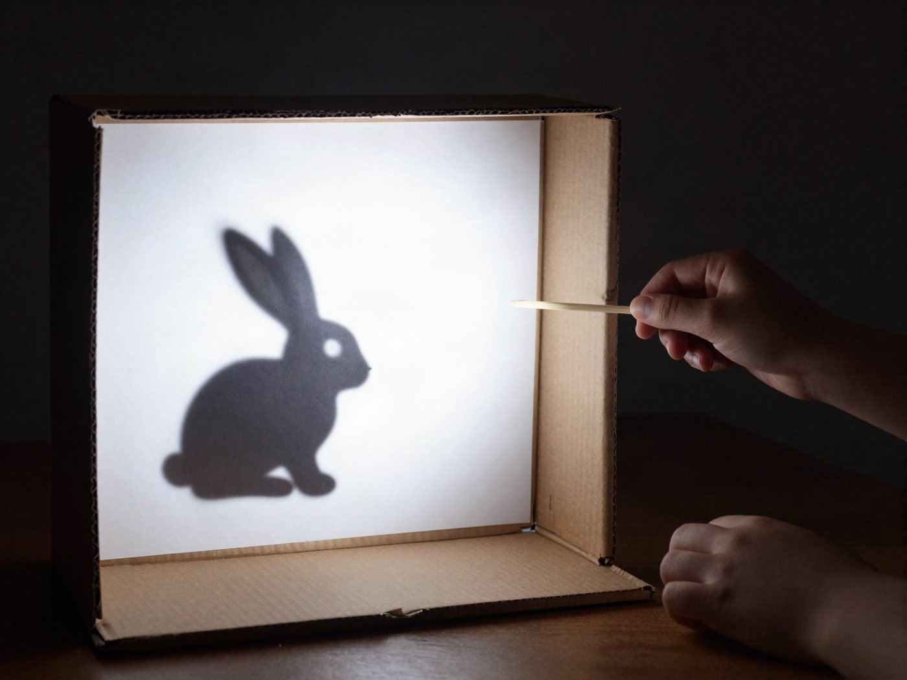

전체 단원 › 실험·활동 › 3~4학년 과학
우유팩 그림자 극장

택배 상자가 우리 집 인형극 무대가 돼요. 빛이 어떻게 나아가고 그림자가 왜 생기는지 놀이로 배워요.
40분 · 난이도 ★★☆ 보통
준비물
- 무대 틀 — 택배 상자 1개
- 스크린 — 얇은 흰 이면지나 종이 포일(베이킹 페이퍼)
- 인형 판 — 우유팩을 펼친 판. 단단해서 오래 써요.
- 막대 — 배달 음식에 딸려 온 나무젓가락
- 조명 — 손전등이나 휴대폰 손전등
- 도구 — 테이프, 가위, 커터칼(어른용)
- 도안 — 그림자 인형 도안 A4 2장 (아래에서 내려받기)
만드는 방법
- 무대 창 만들기
상자 한 면에 테두리 3cm만 남기고 큰 네모 창을 그린 뒤 오려 내요. 창 반대쪽 면(뒷면)도 크게 오려 내거나 상자 뚜껑 쪽을 열어 두어야 손전등 빛이 스크린까지 들어오고, 그 뒤에서 인형을 움직일 수 있어요. - 스크린 붙이기
창 안쪽에 흰 이면지를 팽팽하게 붙여요. 주름이 없을수록 그림자가 또렷하게 보여요. - 인형 만들고 막대 붙이기
도안을 인쇄해 오린 뒤, 펼친 우유팩에 대고 따라 그려서 한 번 더 오려요. 아래쪽에 나무젓가락을 테이프로 단단히 붙이면 완성이에요. 색칠해도 좋아요. 그림자에는 모양만 나타나요. - 불 끄고 공연 시작
방을 어둡게 하고, 상자 뒤 1m쯤에서 손전등으로 스크린을 비춰요. 스크린과 손전등 사이에서 인형을 움직이며 이야기를 들려줘요. 맨 위 사진처럼요!
관찰해 봐요
- 인형을 손전등 가까이 가져가면 그림자 크기가 어떻게 되나요? 스크린 가까이 가져가면요?
- 투명한 비닐, 이면지, 우유팩 조각을 비춰 보세요. 그림자가 어떻게 다른가요?
- 손전등을 2개 켜면 그림자가 몇 개 생길까요?
왜 그럴까?
빛은 언제나 똑바로만 나아가요. 인형이 빛을 가로막으면 그 뒤로는 빛이 가지 못해서 까만 그림자가 생겨요. 인형이 손전등에 가까울수록 빛을 더 넓게 가려서 그림자가 커져요.